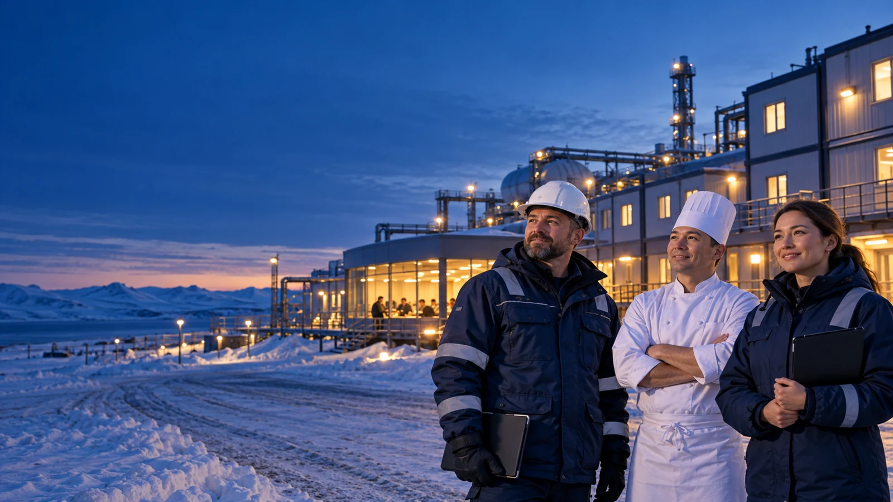

РОССИЙСКАЯ ЕДИНАЯ СЕРВИСНАЯ КОМПАНИЯ
Комплексный сервис
для вашего объекта
Питание, комфорт и надёжная работа инфраструктуры. От Крайнего Севера до крупных городов.
Забота о людях. Каждый день.
НАПРАВЛЕНИЯ
Шесть направлений.
Одна система сервиса.
01
Корпоративное питание
Рационы и обслуживание под график предприятия.
02Гостиничный сервис и санатории
Питание и повседневный сервис для гостей и персонала.
03Профессиональный клининг
Чистота помещений и территории с учётом режима объекта.
04Техническая эксплуатация
Обслуживание инженерных систем, зданий и сооружений.
05Транспорт и снабжение
Перевозки и обеспечение повседневной работы объекта.
06Сервисная поддержка
Сопутствующие процессы в единой системе обслуживания.
ОТ ЗАДАЧИ К СЕРВИСУ
Начнём с задач
вашего объекта.
Изучим условия площадки, определим состав услуг и организацию работы. Это основа для обсуждения решения и его запуска.